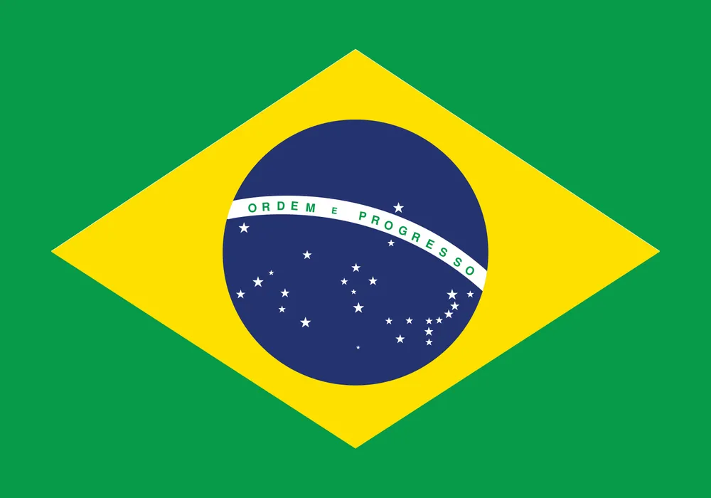

Marcio Augusto De Carvalho Belucci
About Me
My name is Marcio. I was born in São Paulo, Brazil. I have been living here for most of my life and have developed a deep connection with the culture and people of this beautiful city. Currently, I am a student at BYU-Idaho, pursuing a degree in Computer Science. I love to learn new things especially when I can apply them in real-world scenarios.
São Paulo, Brazil

Brazil is the fifth-largest country in the world by land area and is located in South America. It is home to the majority of the Amazon Rainforest, harboring about 10% of all plant and animal species on the planet. The country is world-renowned for its rich cultural diversity, tropical beaches, soccer, and Carnival.